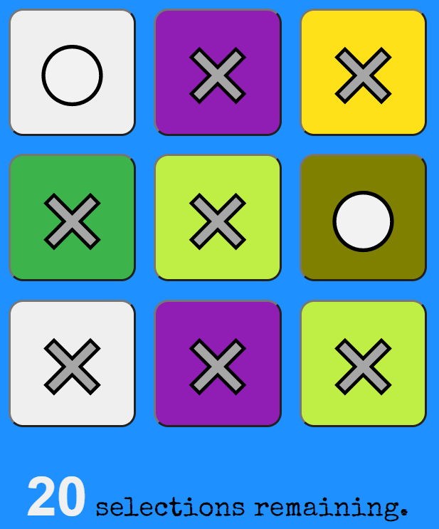
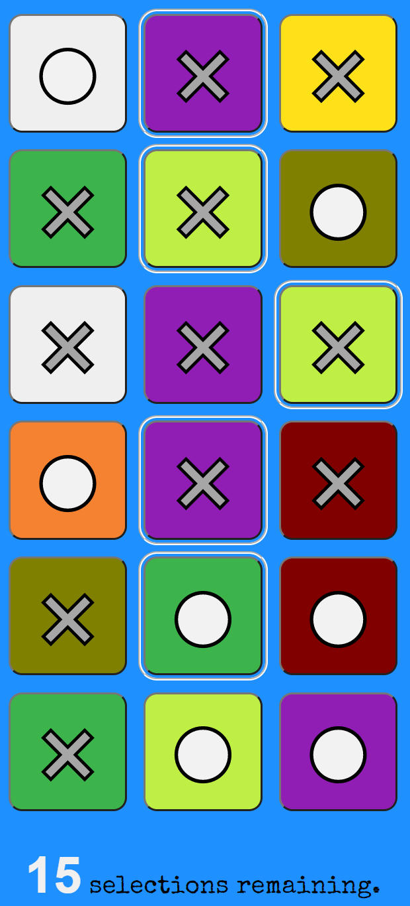
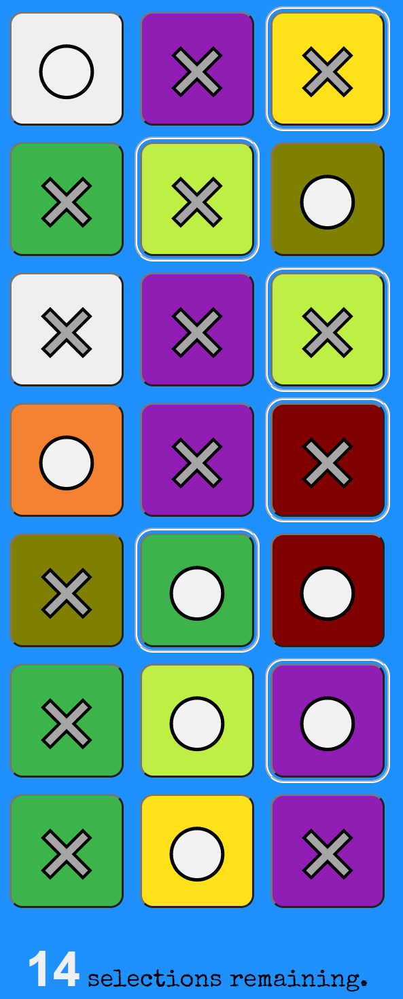

Trek is a game of strategy. It is a single-player game played against the computer. The game is played on a 3 columns x 20 rows rectangular grid.
The computer places 3 rows of pieces at the top of the grid. The pieces are either a colored ⚪ or a colored ✖️.
The player must select a piece from each row. The selected pieces must not contain both a ⚪ and ✖️ of the same color. Once all selections are made, the computer places the pieces for the next row.
When a new row is placed, it is possible that the player is unable to make a selection because it would conflict with previous selections. For eg: If the player has already selected a red ⚪, blue ✖️, green ✖️ and the new row has a red ✖️, blue ⚪ and green ⚪, the player won't be able to make a selection from the new row.
If the player makes an invalid selection, an error message Invalid selection appears for about two seconds to warn the user and disappears. When this happens, the player has a choice to backtrack and change one or more of their previous choices and retry or forfeit the game. The player may directly click on a new piece to change it, provided it is a valid selection.
If there are too many conflicts, they can clear all selections by clicking on the Clear link at the top of the page. This retains the pieces and clears the selections so that the player can make fresh selections.
If the player is unable to make any valid selection, they forfeit. The player's objective is to make a valid selection across all rows of the game grid.
The game can end with either the player winning or forfeiting due to being unable to make a valid selection in the last row.
Finally, they can start a new game by clicking on the New game link at the top of the page. Happy trekking!
Play Trek!